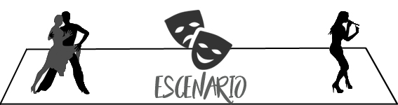

<!--
  Generated template for the SeleccionPage page.

  See http://ionicframework.com/docs/components/#navigation for more info on
  Ionic pages and navigation.
-->
<ion-header>

  <ion-navbar color="seleccion">
    <ion-title>SELECCION</ion-title>

    <ion-buttons end>
      <button ion-button color="light" outline (click)="pagar()">
        HECHO
      </button>
    </ion-buttons>

  </ion-navbar>

</ion-header>


<ion-content style="background: url('../../assets/img/fondoSel.jpg') no-repeat center center fixed">
  
  <div *ngIf="verSwipe" class="swipe">
    
  </div>
  
    <ion-scroll scrollX="true" scrollY="true">
    <!--<div class="telon">
    
    </div>-->
    <ul *ngFor="let fila of matAsientos; let i = index;" class="fila">
      <li [style.backgroundColor]=asiento.strColor class="asiento" *ngFor="let asiento of matAsientos[i];let j=index" (click)="cambioColor(asiento.numAsiento)">
        <div class="num-asiento">
          {{i+1}} - {{j+1}}
        </div>
      </li>
    </ul>
    </ion-scroll>
</ion-content>